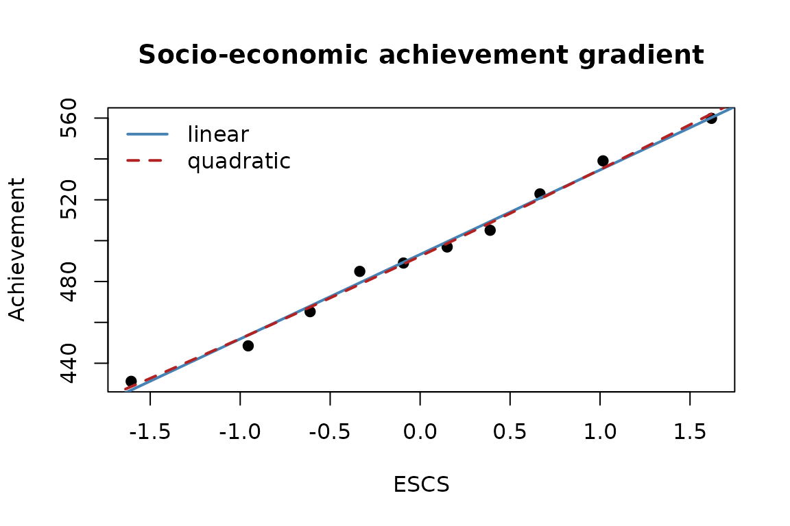

What lsastrat does
lsastrat turns large-scale assessment (LSA) data — PISA,
TIMSS, PIRLS — into the stratification and inequality quantities that
education researchers report, and returns them as first-class objects.
It handles the two features that make LSA data awkward:
- Plausible values (PVs). Achievement is reported as several imputed draws, not a single score. Every estimator is computed on each PV and the results are combined with Rubin’s (1987) rules, so the measurement uncertainty enters the standard error.
- Replicate weights. Complex sampling means the variance must be estimated from replicate weights (BRR/Fay for PISA; JK2 for TIMSS/PIRLS) or, for the segregation indices, a clustered bootstrap.
Inference uses a t reference with Rubin degrees of freedom (not the normal), which matters because LSA studies provide only 5 or 10 plausible values.
What this replaces
Consider the standard workflow for one of the most-reported
quantities in educational stratification, the ESCS gradient for a set of
countries. Done by hand it means: for each country, fit 10 plausible
values x 81 weights = 810 weighted regressions, pool the slopes with
Rubin’s rules, derive the strength from the pooled R-squared, and keep
track of the Fay factor – then repeat for every country, and again for
every robustness variant. General LSA packages (intsvy,
EdSurvey, Rrepest) automate the
regression but still leave the gradient, segregation indices,
opportunity decompositions and their correct inference to be assembled
manually, and none applies the finite-sample bias correction the
segregation literature calls for. In lsastrat each of these
is one call returning a labelled estimate with design-correct
uncertainty:
lsa_by(stu, by = "CNT", estimator = social_gradient,
achievement = paste0("PV", 1:10, "MATH"), escs = "ESCS", design = des)and tidy() turns any result into a publication table,
autoplot() into a figure, and lsa_multiverse()
into a robustness analysis.
All examples use pisa_mini, a fully
simulated PISA-like data set bundled with the package (it is
not real PISA data). It has 10 plausible values each for
mathematics and reading (PV1MATH…PV10MATH), a
final weight (W_FSTUWT), 64 Fay BRR replicate weights
(W_FSTURWT1…W_FSTURWT64), and background
variables.
The socio-economic gradient
social_gradient() follows the OECD definition: the
slope is the score-point change per one unit of the
socio-economic index (ESCS), the strength is the
percentage of achievement variance it explains (R² × 100), and
curvature is an optional quadratic term.
g <- social_gradient(pisa_mini, achievement = math, escs = "ESCS",
weight = "W_FSTUWT", repweights = reps)
g
#> Socio-economic achievement gradient
#> SES index: ESCS | 10 plausible value(s) | n = 2048
#> Variance: BRR, 64 replicate weights (+ PV imputation); t reference
#>
#>
#> Estimate Std.Error t df p
#> slope 41.357 1.831 22.59 399.4 2.1e-73
#> strength 20.189 1.799 11.22 389.1 1.7e-25
#> curvature 1.025 1.597 0.64 406.7 5.2e-01
#>
#> slope = score points per 1 unit of ESCS; strength = % variance explained (R^2 x 100)The result behaves like a model object:
coef(g)
#> slope strength curvature
#> 41.357302 20.188700 1.025083
confint(g)
#> 2.5 % 97.5 %
#> slope 37.758539 44.956065
#> strength 16.651036 23.726363
#> curvature -2.113944 4.164111
plot(g)
School segregation
segregation_index() reports the family of indices used
in stratification research. Pass a categorical group for
social segregation:
segregation_index(pisa_mini, unit = "school_id", group = "IMMIG",
weight = "W_FSTUWT", variance = "bootstrap",
n_boot = 99, boot_seed = 1)
#> Segregation indices (social segregation)
#> unit: school_id | 128 units | 3 group(s) | minority: first_gen
#> Variance: clustered bootstrap (B=99, cluster=school_id), bias-corrected
#>
#>
#> Estimate Std.Error t df p
#> D 0.578 0.037 15.45 Inf 7.8e-54
#> S 0.554 0.040 13.83 Inf 1.7e-43
#> isolation 0.097 0.027 3.55 Inf 3.8e-04
#> Hutchens 0.362 0.036 9.97 Inf 2.2e-23
#> H 0.095 0.017 5.50 Inf 3.9e-08
#> M 0.074 0.016 4.59 Inf 4.3e-06The entropy and dissimilarity indices are upward-biased when schools
are small — exactly the LSA case. With
variance = "bootstrap" a two-stage clustered bootstrap
estimates and removes that bias (debias = TRUE) and gives a
design-correct standard error. With replicate weights you can instead
use them directly (no bias correction):
segregation_index(pisa_mini, unit = "school_id", group = "IMMIG",
weight = "W_FSTUWT", repweights = reps,
indices = c("D", "H", "M"))
#> Segregation indices (social segregation)
#> unit: school_id | 128 units | 3 group(s) | minority: first_gen
#> Variance: BRR, 64 replicate weights; t reference
#>
#>
#> Estimate Std.Error t df p
#> D 0.658 0.040 16.47 Inf 6.2e-61
#> H 0.157 0.012 13.12 Inf 2.5e-39
#> M 0.122 0.011 11.39 Inf 4.8e-30For academic segregation, define the group by an achievement threshold; the index is then pooled across plausible values:
segregation_index(pisa_mini, unit = "school_id", achievement = math,
cutoff = 480, indices = c("D", "H"),
variance = "bootstrap", n_boot = 99, boot_seed = 1)
#> No `weight` supplied; using equal weights.
#> Segregation indices (academic segregation)
#> unit: school_id | 128 units | 2 group(s) | minority: below
#> Variance: clustered bootstrap (B=99, cluster=school_id), bias-corrected (+ PV imputation)
#>
#>
#> Estimate Std.Error t df p
#> D 0.218 0.026 8.39 109.0 1.9e-13
#> H 0.052 0.019 2.83 475.3 4.9e-03Inequality of educational opportunity
ieop() implements the Ferreira–Gignoux (2014)
decomposition: the share of achievement variance explained by
pre-determined circumstances.
ieop(pisa_mini, achievement = math,
circumstances = c("IMMIG", "parental_edu", "books"),
weight = "W_FSTUWT", repweights = reps)
#> Inequality of educational opportunity (Ferreira-Gignoux)
#> 10 plausible value(s) | n = 2048 | 3 circumstance(s): IMMIG, parental_edu, books
#> Variance: BRR, 64 replicate weights (+ PV imputation); t reference
#>
#>
#> Estimate Std.Error t df p
#> iop 0.209 0.018 11.79 612.6 4.6e-29
#> iop_adj 0.206 0.018 11.58 610.7 3.7e-28
#> explained_var 1518.225 143.167 10.60 1204.1 3.5e-25
#> total_var 7253.731 228.176 31.79 517.7 8.7e-124
#>
#> iop = share of achievement variance explained by circumstances (raw R^2, upper bound); iop_adj = df-adjustedThe raw iop is the regression R² and is an upper
bound — it inflates as the circumstance set grows.
iop_adj is the degrees-of-freedom adjusted version; prefer
it, and treat iop as the ceiling.
explained_var is the absolute inequality of opportunity
(variance of predicted scores) and total_var the total
achievement variance.
Comparing groups
lsa_by() runs any estimator across the levels of a
grouping variable and stacks the results into one comparable table – the
workhorse for cross-country work. equity_scatter() draws
the OECD quality-vs-equity scatter.
by_imm <- lsa_by(pisa_mini, by = "IMMIG", estimator = social_gradient,
achievement = math, escs = "ESCS", weight = "W_FSTUWT",
repweights = reps)
by_imm
#> `social_gradient` by IMMIG (3 groups)
#>
#> group term estimate se statistic df p ci_lo ci_hi
#> native slope 41.867 2.070 20.224 580.355 0.000 37.801 45.933
#> native strength 20.192 1.934 10.438 346.181 0.000 16.388 23.997
#> native curvature 0.752 1.920 0.392 242.884 0.696 -3.031 4.534
#> second_gen slope 39.234 3.548 11.058 792.323 0.000 32.269 46.198
#> second_gen strength 17.931 2.935 6.108 425.972 0.000 12.161 23.700
#> second_gen curvature 0.560 2.792 0.201 1125.479 0.841 -4.919 6.039
#> first_gen slope 32.697 11.252 2.906 338.768 0.004 10.566 54.829
#> first_gen strength 13.126 9.079 1.446 258.647 0.149 -4.752 31.003
#> first_gen curvature 7.279 8.914 0.817 600.676 0.414 -10.227 24.785Decomposing inequality
Three decompositions break a quantity into interpretable parts. The between-school variance share (a strongly stratified system has a high value):
variance_decomposition(pisa_mini, math, unit = "school_id",
weight = "W_FSTUWT", repweights = reps)
#> Between/within-unit variance decomposition
#> unit: school_id | 128 units | 10 plausible value(s) | n = 2048
#> Variance: BRR, 64 replicate weights (+ PV imputation); t reference
#>
#>
#> Estimate Std.Error t df p
#> icc 0.153 0.017 9.15 1259.2 2.3e-19
#> var_between 1110.411 133.168 8.34 1561.8 1.6e-16
#> var_within 6143.320 205.537 29.89 384.4 2.7e-102
#> var_total 7253.731 228.176 31.79 517.7 8.7e-124
#>
#> icc = between-unit share of achievement varianceThe Shapley decomposition attributes the inequality of opportunity to each circumstance (the contributions sum to the total relative IOp):
ieop_decompose(pisa_mini, math,
circumstances = c("IMMIG", "parental_edu", "books"),
weight = "W_FSTUWT", repweights = reps)
#> Inequality of opportunity: Shapley decomposition
#> 10 plausible value(s) | n = 2048 | 3 circumstance(s)
#> Variance: BRR, 64 replicate weights (+ PV imputation); t reference
#>
#>
#> Estimate Std.Error t df p
#> IMMIG 0.009 0.005 2.01 425.3 4.5e-02
#> parental_edu 0.106 0.013 7.86 263.8 9.8e-14
#> books 0.094 0.013 7.44 178.5 4.1e-12
#>
#> Shapley contributions to relative IOp (R^2); they sum to the totalThe Oaxaca-Blinder decomposition splits an achievement gap into an explained (composition) and an unexplained (structure) part:
d2 <- pisa_mini[pisa_mini$IMMIG %in% c("native", "first_gen"), ]
d2$IMMIG <- factor(d2$IMMIG)
oaxaca_gap(d2, math, group = "IMMIG",
predictors = c("ESCS", "books", "parental_edu"),
weight = "W_FSTUWT", repweights = reps)
#> Oaxaca-Blinder gap decomposition (twofold)
#> IMMIG: native - first_gen | 10 plausible value(s) | n = 1421
#> Variance: BRR, 64 replicate weights (+ PV imputation); t reference
#>
#>
#> Estimate Std.Error t df p
#> gap 32.004 9.690 3.30 627.4 1.0e-03
#> explained 29.250 5.364 5.45 134118.7 5.0e-08
#> unexplained 2.755 8.819 0.31 476.5 7.5e-01
#>
#> gap = mean(native) - mean(first_gen); components sum to gapMultiverse analysis
lsa_multiverse() runs an estimator across a grid of
analytic forking paths so you can read off how robust a finding is.
Bundle the design once with lsa_design():
des <- lsa_design(weight = "W_FSTUWT", repweights = reps)
mv <- lsa_multiverse(
pisa_mini, estimator = social_gradient,
grid = list(
achievement = list(math = math, read = paste0("PV", 1:10, "READ")),
curvature = list(linear = FALSE, quadratic = TRUE)
),
fixed = list(escs = "ESCS"), design = des, term = "slope")
mv
#> Multiverse: `social_gradient`, term = slope (4 specifications)
#> median estimate: 39.1 range: [36.8, 41.4]
#> 100% of specifications same-signed; 100% exclude 0 (95% CI)Every result has a plot() method, and an
autoplot() method when ggplot2 is installed
(e.g. autoplot(by_imm, term = "slope") for a forest plot,
or autoplot(mv) for the specification curve).
Beyond the built-in estimators
lsa_model() fits any model to a plausible-value
outcome with replicate-weight inference – a multiple regression, a
logistic model, or a multilevel model – pooling over plausible values
exactly as the built-in estimators do. Supply a one-sided formula; the
outcome is filled in from each plausible value.
lsa_model(pisa_mini, ~ ESCS + IMMIG + female, achievement = math, design = des)
#> Model: stats::lm(<PV> ~ ESCS + IMMIG + female)
#> 10 plausible value(s) | n = 2048
#> Variance: BRR, 64 replicate weights (+ PV imputation); t reference
#>
#>
#> Estimate Std.Error t df p
#> (Intercept) 500.857 2.876 174.15 906.1 0.0e+00
#> ESCS 40.659 1.867 21.78 379.4 8.2e-69
#> IMMIGsecond_gen -9.437 4.284 -2.20 223.0 2.9e-02
#> IMMIGfirst_gen -3.537 9.344 -0.38 470.4 7.1e-01
#> female -9.770 4.599 -2.12 279.3 3.5e-02
#>
#> fitter = stats::lmlsa_trend() compares a quantity across assessment cycles
and folds the linking (equating) error into the standard error of the
change:
half <- nrow(pisa_mini) %/% 2
c1 <- social_gradient(pisa_mini[1:half, ], math, "ESCS", design = des)
c2 <- social_gradient(pisa_mini[-(1:half), ], math, "ESCS", design = des)
lsa_trend(list("2018" = c1, "2022" = c2), term = "slope", link_error = 3.5)
#> Trend in `slope` (social_gradient) across 2 cycles; baseline = 2018
#> linking error: 3.5 (added to each change SE)
#>
#> cycle estimate se change change.se z p
#> 2018 41.308 2.874 0.000 NA NA NA
#> 2022 41.454 2.426 0.146 5.137 0.03 0.98
#>
#> change = estimate - baseline; SE includes the linking errorOn large data the replicate-weight refits can be run in parallel with
options(lsastrat.cores = 4) (Unix/macOS).
Where it fits
lsastrat complements rather than replaces general LSA
packages such as EdSurvey, intsvy,
BIFIEsurvey, RALSA and OECD’s
Rrepest, which provide the generic estimators but leave
these stratification quantities to be assembled by hand. The estimators
are cross-validated against intsvy::pisa.reg.pv(), the
segregation package, and a weighted regression R². ```